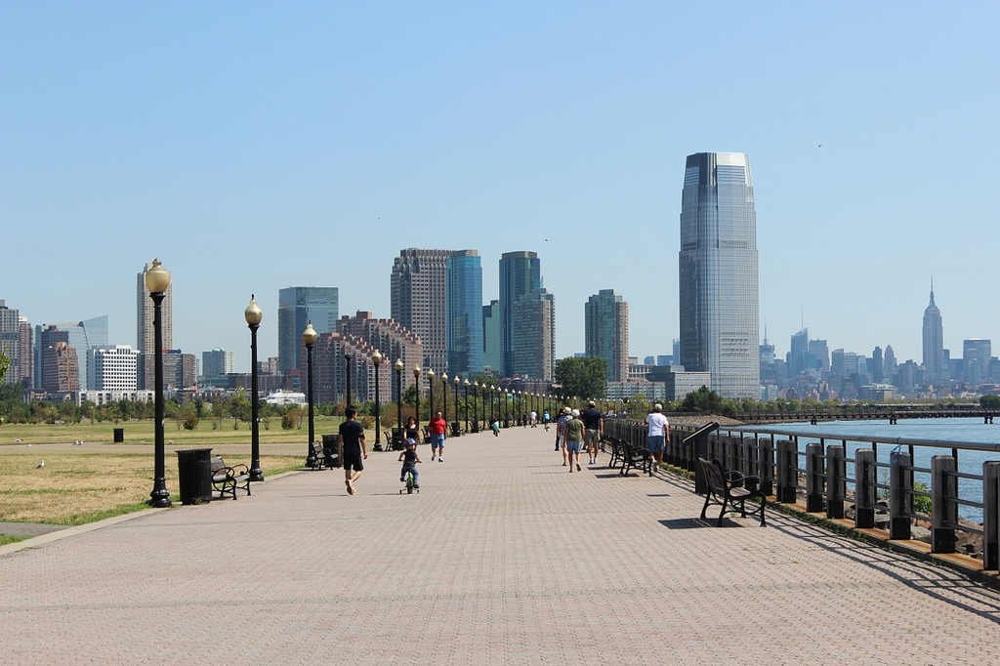
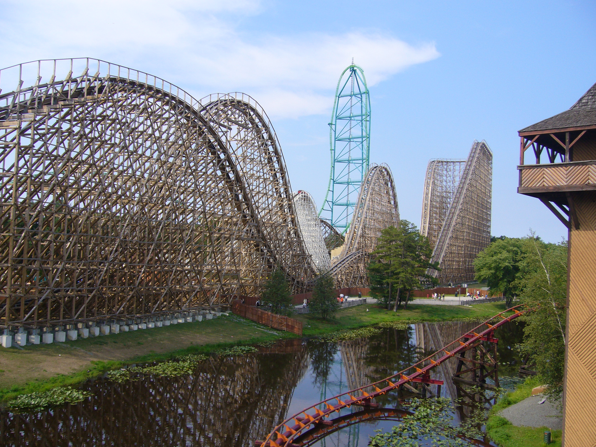
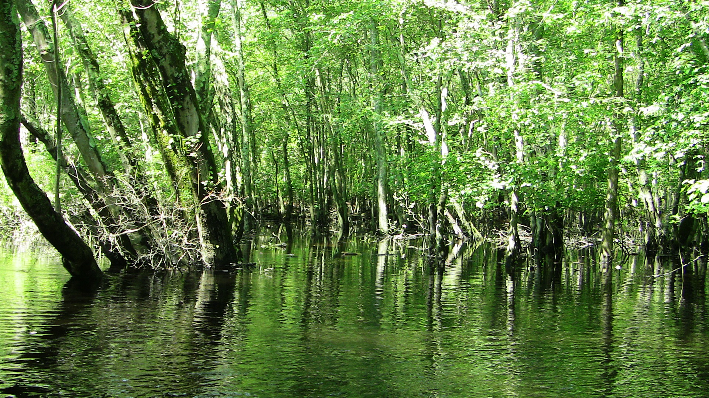

Despite the state of New Jersey being small areawise, it is a hotspot for tourists due to its proximity to major cities, like Philadelphia and New York City.
Even though New Jersey surrounds these popular areas, there is much to do within our state whether you're travelling to North, Central, or South Jersey.
North Jersey

Turtle Back Zoo
The Turtle Back Zoo of West Orange is a great place for families to spend the day. This zoo features 21 animal exhibits including the Touch Tank, Butterfly Tent, and Native New Jersey Animals. Also, the zoo offers many experiences like boating on the waterfront, mini golf, and casual dining. Tickets are very inexpensive, and parking is free [10]!
Liberty State Park
Located in Jersey City, this state park and green reserve has a beautiful view of the Hudson River and New York City skyline. This park is also a great place to ride a bike or have a picnic. In addition, there are private walking, biking, or helicopter tours of New York City available, and the relaxing, scenic ferry boat ride will be the main form of transportation to and from the city. Shown on the right [11] [19].
Great Falls
Great Falls on the Passaic River in Paterson is a historical waterfall that is marked by the largest and best example of early manufacturing mills in the United States. The mills and waterfalls show the great impact that these attempts to manufacture products have on our nation, and are available to explore by the public [12].
Central Jersey

Six Flags Great Adventure
Six Flags Great Adventure is an amusement park in Jackson, which is home to the tallest rollercoaster in the world. The park also features 13 other coasters and many restaurants. Great Adventure also combines with the Off Road Safari, making it the world's largest theme park. Shown on the right [13] [20].
Grounds for Sculpture
Located in Hamilton Township, Grounds for Sculpture is an outdoor walk-through museum made up of 299 sculptures. There are tours offered, or tourists can explore the grounds themselves. Grounds for Sculpture also features restaurants and fine dining [14].
Jenkinson's Boardwalk
Jenkinson's Boardwalk at Point Pleasant Beach is a one mile long boardwalk filled with rides, games, and shops for families to spend the day. The ride tickets are decently priced, but the memories are priceless. The boardwalk is located at the end of the beach, so there is a beautiful view of the Jersey shore right there while walking the boardwalk [15].
South Jersey

Morey's Piers
Morey's Piers are three large piers located on the Wildwoods Boardwalk in North Wildwood and Wildwood. Combined, these piers have over 100 rides and two beachfront waterparks. The piers also offer dining and guest accomodations right on the Atlantic Ocean [16].
Cape May County Park & Zoo
Located in Cape May Court House, the Cape May County Park & Zoo has more than 30 animals, including the notable snow leopard. There are also pavilions available to rent, so picnics or other outings here are made easy. Admission for the zoo and park is free, so this trip is fun and inexpensive for everyone [17]!
Winding River Campground
Tubing and kayaking on the Egg Harbor River is a great experience made possible at Winding River Campground. There are beautiful views of forests and the river ahead as the self-guided tours take place. Also, there are cabins available for rent to relax in after this tiring day. The equipment rentals are reasonably priced as well! Shown on the right [18] [21].